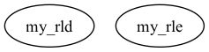

Master index
Index for marsbar/@maroi_matrix/private
Dependency Graph for marsbar/@maroi_matrix/private

Generated on Sat 25-Sep-2021 17:54:27 by
m2html
© 2003-2019
 Master index
Master index Master index
Master index